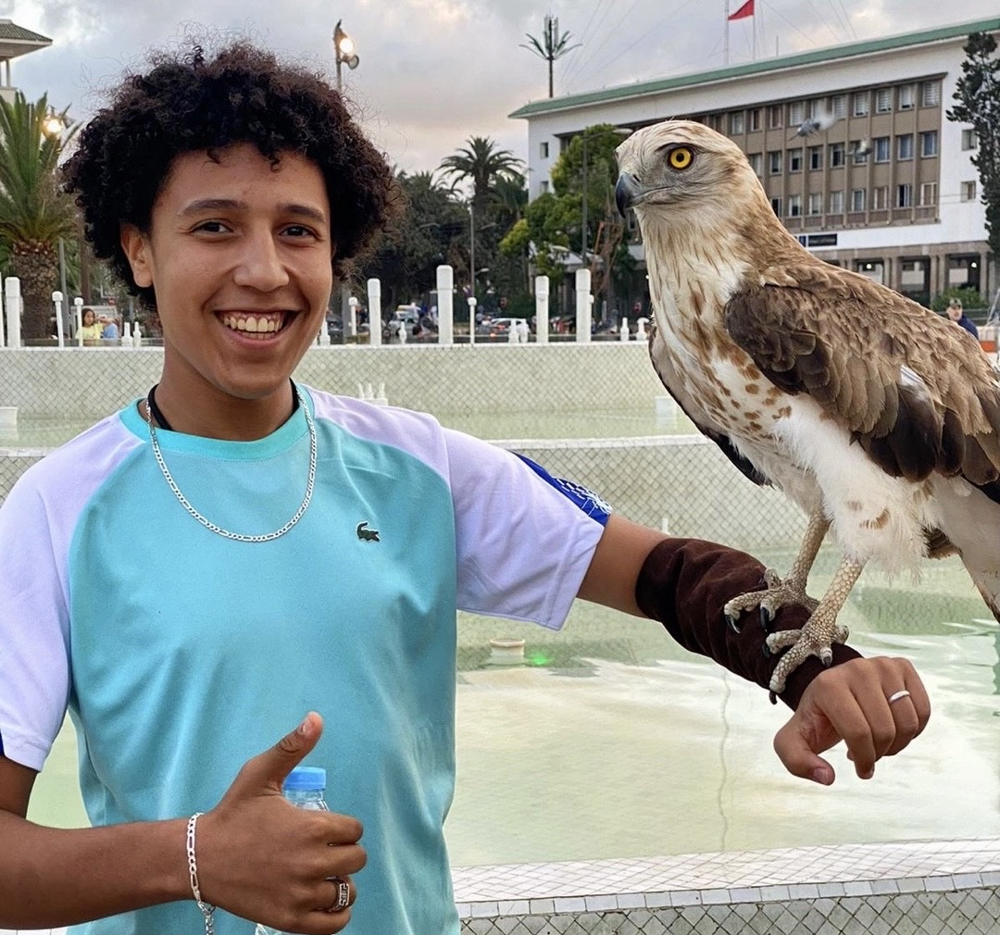
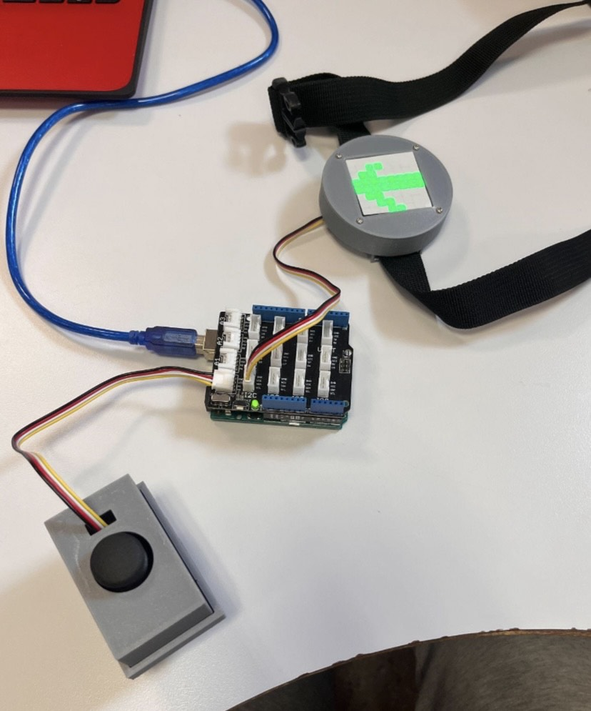
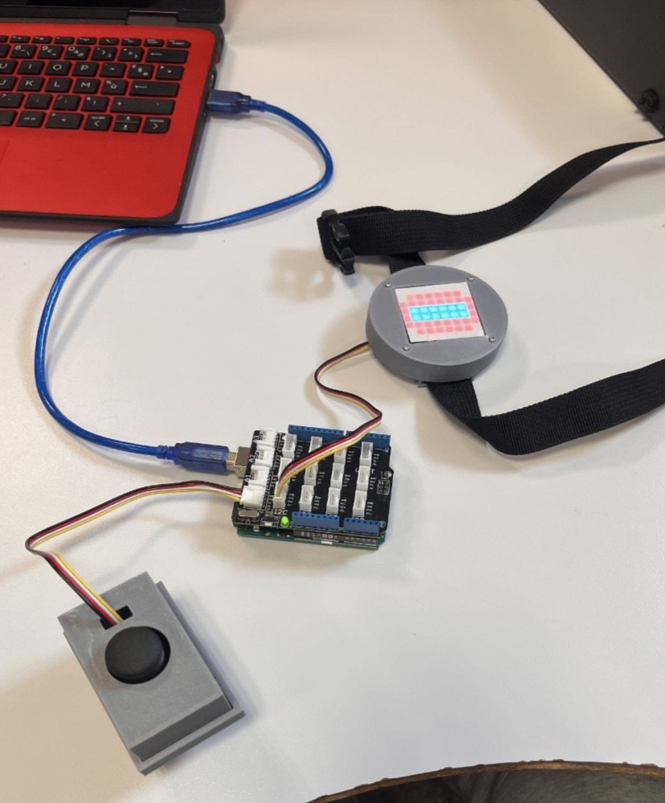
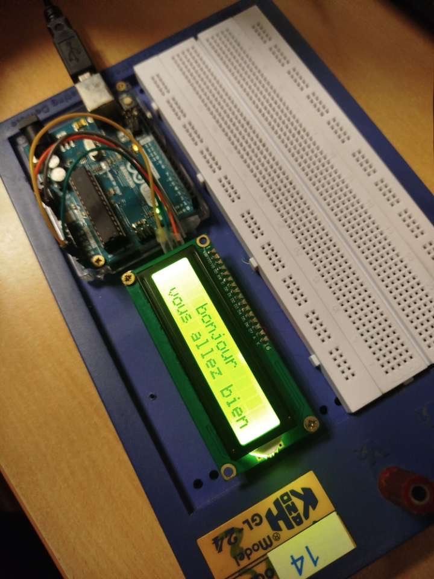

Younes Nader
étudiant
Béziers, France
younes.nader041006@gmail.com
0646989248
compètence
Jeux vidéo
boxeur
informatique
Langues
Français
Italien
Arabe
Anglais
Espagnol
Language Informatique
-HTML, CSS
-C++
-Arduino
-Scratch
A Propos De Moi :
04 Octobre 2006
Je suis passionné par les jeux vidéo, que ce soit pour l’aspect compétitif, l’immersion dans des univers variés ou encore le plaisir de jouer en ligne avec d’autres personnes. L’informatique m’intéresse également, notamment tout ce qui touche a la programmation, aux logiciels et à la compréhension du fonctionnement des systèmes. Côté sport, je pratique la boxe anglaise, un sport qui demande rigueur et concentration, et j’aime aussi beaucoup le football, que je suis régulièrement et que je joue dès que j’en ai l’occasion. En dehors du sport et du numérique, je consacre du temps aux films et aux séries, qui me permettent de découvrir de nouvelles histoires, cultures et émotions. Je suis quelqu’un de curieux, dynamique, observateur, déterminé et sociable, des qualités qui me poussent à toujours apprendre, m’adapter et aller au bout de ce que j’entreprends.
Projet
Arduino
mai 2024
Ce projet Arduino consiste à programmer un afficheur Led afin qu'il affiche 3 flèches qui pointe vers une direction ainsi qu'un stop, cette afficheur étais directement liée a un joystick qui diriger donc la partie affichage de l'afficheur.


Afficheur Led
Site Web
novembre 2023
griffithcompany34 est un site web qui présente et conçois des projets d'éco conception
novembre 2024


programmation d'écran LCD
Parking Automatique
mars 2025
Parking Automatique est un projet où on est une start-up qui a créé un mini parking autonome. Notre système gère les voitures tout seul : plus besoin de chercher une place, tout est optimisé automatiquement. C’est compact, intelligent, et parfait pour les villes où l’espace manque. On a voulu rendre le stationnement plus simple, plus rapide et plus fluide. Ce projet est accompagné de son site web qui permet de présenter l'entièreté du projet